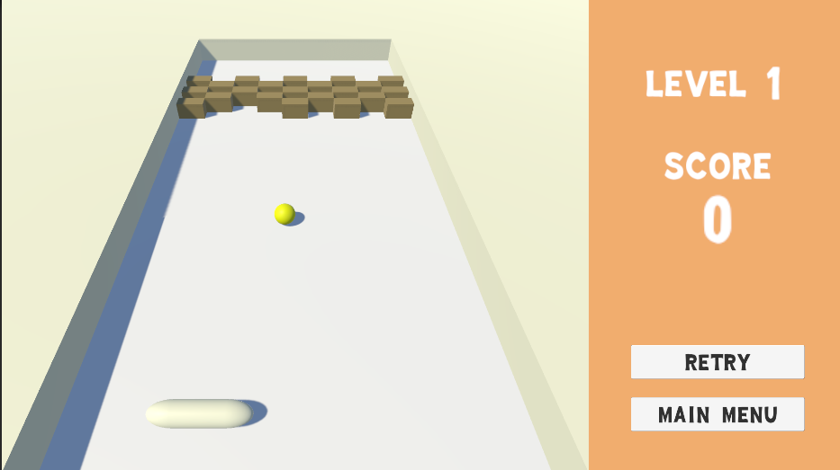
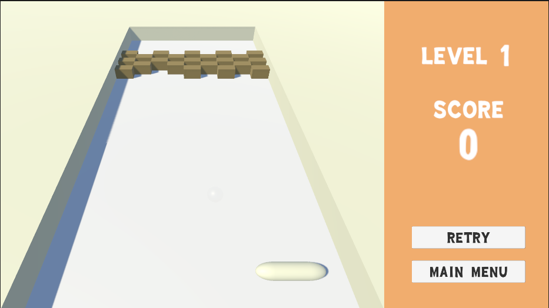
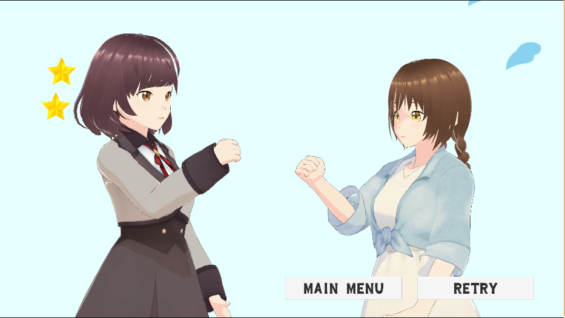
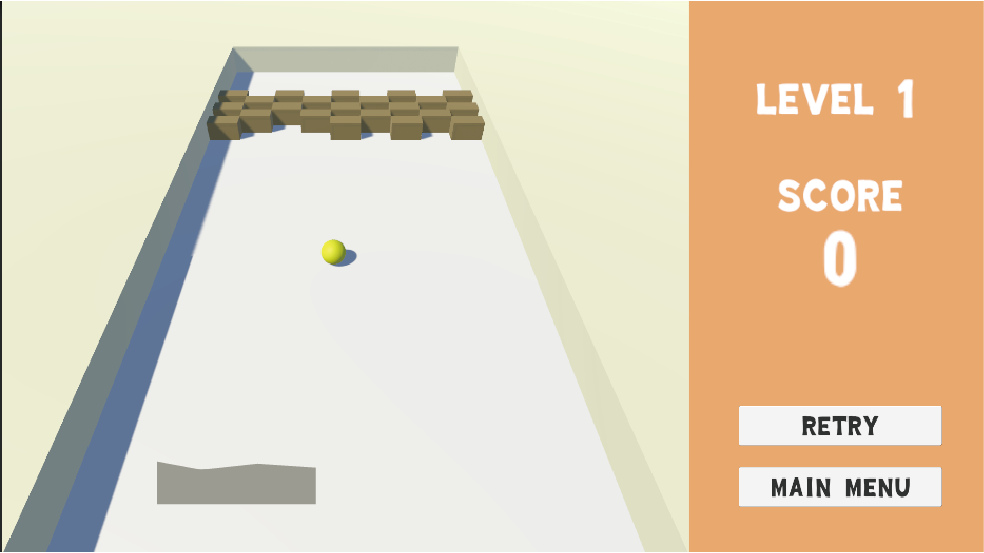
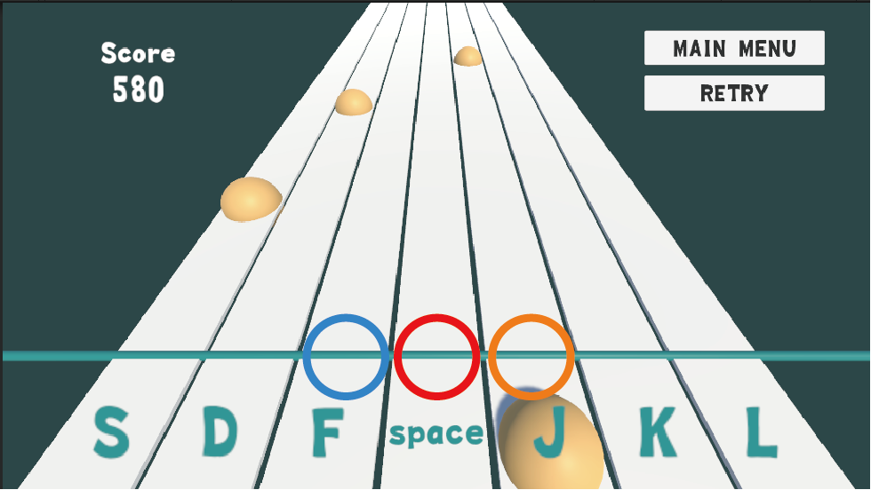

プロフィール
紹介
武政実玖（Takemasa Miku）
和歌山大学大学院システム工学研究科 知的モデリングクラスタ
視覚メディア研究室
使用言語：C++, C#, Swift, JavaScript, TypeScript
使用ソフト：Unity, Xcode, Illustrator, Premiere Pro, Excel, Power Point, Word
学歴
- 2017/03
- 大阪府立泉陽高等学校 卒業
- 2017/04
- 和歌山大学システム工学部 入学
- 2021/03
- 和歌山大学システム工学部 卒業
- 2021/04
- 和歌山大学大学院システム工学研究科 入学
研究
卒業研究「ハンドトラッキングを利用した遠隔作業支援システム」
本研究では，遠隔地における作業支援のための遠隔コミュニケーションシステムを開発した．このシステムはスマートフォンやタブレット端末を用いて，一方は手のトラッキング情報を，もう一方はリアルタイム映像を互いに送信し，映像に仮想の手を投影したAR動画の作成と共有を行う．これにより，作業支援において手の動きを離れた人に見せることができ，言葉では伝えにくい指示を直感的かつ円滑に受け取ることが可能になると考え，評価実験を行った．その結果，本システムでは直感的な操作は実現できなかったが，より円滑な指示が可能となった．
活動歴
GREE VR Studio Laboratory
2021年8月よりREALITY株式会社GREE VR Studio Laboratoryにて研究させていただいている。
GREE Tech Conference 2021
GREE Tech Conference内の私が担当した部分はこちら → メタバースで使われそうな指トラ技術
モーションキャプチャーを用いてピアノを弾いてみたが、正しい位置に手が置かれなかったり指が震えるといった問題点がある
こちらの映像におけるピアノとジャンケンにおいてはアニメーションを１から作っている
ピアノの弾き方など個性をモーションキャプチャーから出すことができないか検討中である
作品
Game Collection
開発期間 : 2022/01/03 - 2022/01/06
動作環境 : Chrome（PC）
内容 : ブロック崩し, ジャンケン, リズムゲーム
遊び方等の詳細はGitHubのREADMEに記載
こだわり
・難易度はあえてあげて短期決戦に（スピード感）
・レベルが上がるとボールが時々透明になるギミック
・バーは当てる場所によって反射率を意図的に変えれる形に
・リアル感（ジャンケンを出すタイミング・負けそうになったら焦る演出）
・テンポよくスピード感

・ノーツはmidiファイルから自動生成している
やりたかったこと・修正
・バーの形を上記のように変更（休憩はプレイヤースキルがかなり必要だったため）
・2回当てないと壊れないブロックの生成
・押したときに視覚的に伝わるように判定に合わせて赤＞オレンジ＞青のエフェクトを出す
・midiファイルを入力できる形にしてどんな曲でも遊べるようにする